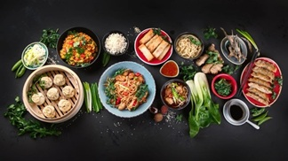

CHINA
China has one of the world’s oldest continuous histories, dating back over 5,000 years. It was shaped by powerful dynasties, great inventions like paper and gunpowder, and influential philosophies such as Confucianism and Taoism. Through periods of unity, division, and modernization, China’s history has deeply influenced its culture, traditions, and role in the world today. It offers everything from modern megacities to ancient temples, deserts, mountains, and rivers.
China’s capital is a mix of ancient history and modern life. Tourists can explore iconic sites like the Great Wall, the Forbidden City, and the Summer Palace, as well as enjoy bustling markets, traditional food, and cultural performances.
A vibrant global city known for its futuristic skyline, historic Bund waterfront, and lively shopping streets. Visitors can experience modern attractions, museums, and a mix of international and local cuisine.
Famous as the starting point of the Silk Road, Xi’an is home to the incredible Terracotta Army and ancient city walls. Tourists can explore historic sites, traditional Muslim Quarter markets, and rich Chinese history.
The Forbidden City is the imperial palace complex in the center of the Imperial City in Beijing. The palace is now administered by the Palace Museum as a UNESCO World Heritage Site. It is one the most famous palaces in all of Chinese history, and is the largest preserved royal palace complex still standing in the world.
The Great Wall of China is a series of fortifications in China. They were built across the historical northern borders of ancient Chinese states and Imperial China as protection against various nomadic groups from the Eurasian Steppe. The the construction started on the 7th century BC and ended on the 17th century AC. It is a UNESCO World Heritage Site, and was voted one of the New 7 Wonders of the World in 2007.

The Terracotta Army is a collection of terracotta sculptures depicting the armies of the first emperor of China. It is a form of funerary art buried with the emperor in 210–209 BCE with the purpose of protecting him in his afterlife. The Terracotta Army hold more than 8,000 soldiers, 130 chariots with 520 horses, and 150 cavalry horses
Potala Palace is a museum complex in Lhasa, the capital of the Tibet. From 1649 until 1959 it served as the Dalai Lamas' residence, after which it became chiefly a museum following the annexation of Tibet by the People's Republic of China. Construction of the present structure was begun in 1645 at the order of the 5th Dalai Lama
|  |
|